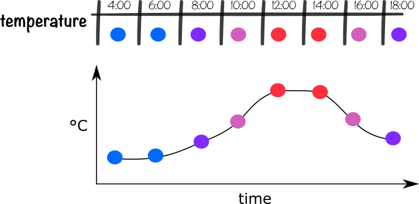
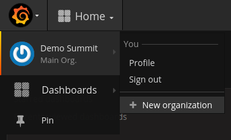
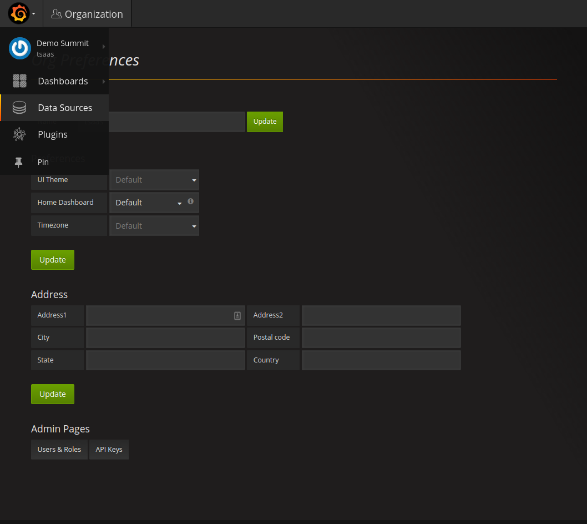
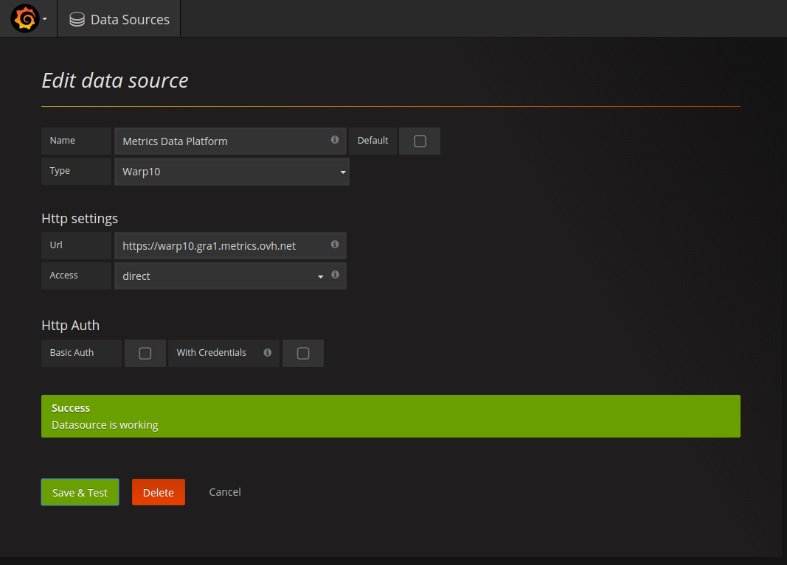
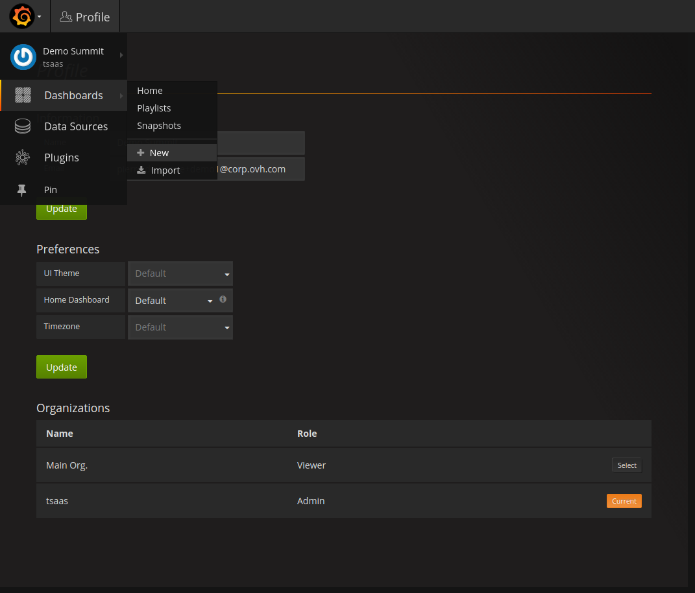
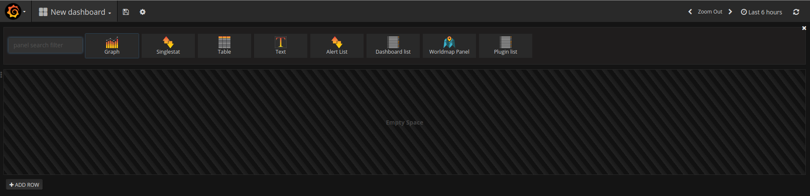
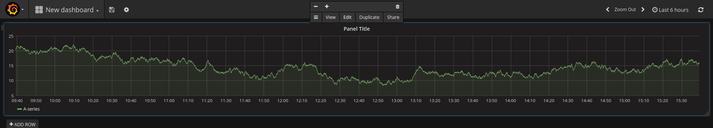
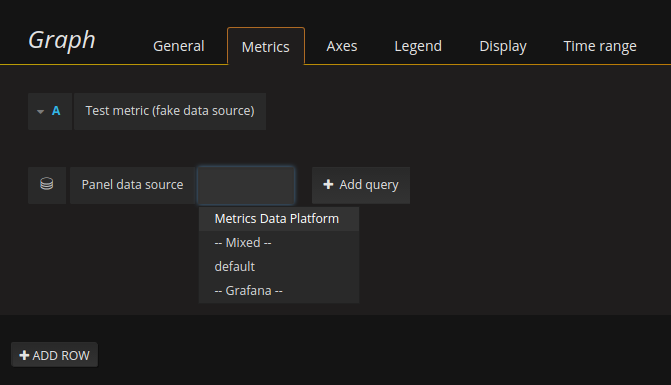
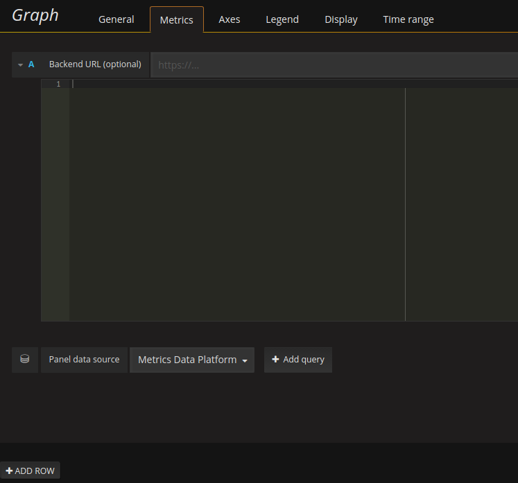
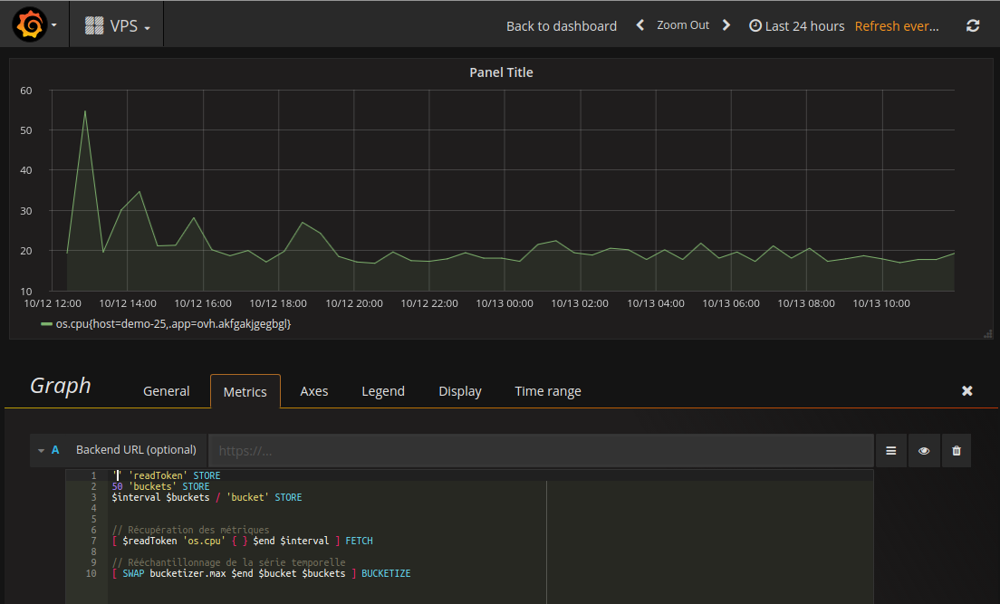

Nous appelons une série temporelle, une suite de mesures (périodique ou non) qui évolue au fil du temps. Ces mesures sont nommées métriques.
Prenons l'exemple de l'évolution de la température dans une pièce. Elle peut se traduire sont la forme d'un tableau comme celui ci-dessous :
Cependant, il est plus intéressant de le visualiser sous forme d'un graphique. Les températures ont été transformées en point de couleur pour simplifier la lecture.

Le graphique ci-dessus représente une série temporelle avec :
Les séries temporelles sont toutes autour de nous, en voici quelques exemples :
Metrics Data Platform est une plateforme dédiée au stockage et au traitement de séries temporelles. L'un des cas d'utilisation à OVH est la supervision de serveurs. La supervision passe par :
Nous allons partir de ce cas d'utilisation comme exemple.
Dans la suite du workshop, vous serez amenez à utiliser des identifiants.
| Identifiants | Valeur |
|---|---|
| Nic | |
| Mot de passe | |
| Token de lecture |
Afin de créer les métriques associées à notre serveur, nous allons utiliser Noderig.
Noderig est un logiciel Open-Source qui collecte les métriques du système d'exploitation et les expose au format Warp10. Les données collectées sont exposées localement sur http://127.0.0.1:9100/metrics avec le verbe HTTP GET.
Voici un exemple de métriques exposées par Noderig au format Warp10 :
1507792638180002// os.cpu{} 9.803921569019082
1507792638180333// os.mem{} 12.593965071448396
1507792638180333// os.swap{} 0
1507792638180374// os.load1{} 0.02
1507792638180479// os.net.bytes{direction=in} 6294302043
1507792638180479// os.net.bytes{direction=out} 74125282552
1507792638189821// os.disk.fs{disk=/dev/sda1} 12.052782960199004
Si vous souhaitez avoir plus de métriques exposées par Noderig, un fichier de configuration permet de régler le niveau de métriques remontées. La documentation est disponible sur le projet GitHub de Noderig. Vous pouvez également implémenter votre propre collecteur de métriques et l'interfacer avec Noderig.
Voici le fichier de configuration par défaut de Noderig :
cpu: 1 # CPU collector level (Optional, default: 1)
mem: 1 # Memory collector level (Optional, default: 1)
load: 1 # Load collector level (Optional, default: 1)
disk: 1 # Disk collector level (Optional, default: 1)
net: 1 # Network collector level (Optional, default: 1)
period: 1000 # Duration within all the sources should be scraped in ms (Optional)
listen: none # Listen address, set to none to disable http endpoint (Optional)
collectors: /opt/noderig # Custom collectors directory (Optional)
Nous utilisons la configuration par défaut.
Vous pouvez consulter les métriques renvoyées par Noderig. Pour cela, connectez-vous sur l'instance VPS qui vous est allouée.
lab1@pc11:~$ ssh {{ ctrl.sshUri }}
Une fois connecté, pour consulter les métriques exposées par Noderig, il suffit de faire une simple requête HTTP.
debian@{{demo.vpsId}}:~$ curl http://127.0.0.1:9100/metrics
Vous devez avoir une réponse qui ressemble à l'exemple de métriques ci-dessus renvoyées par Noderig.
Maintenant que Noderig expose les métriques de notre machine. Il faut venir les collecter. Chez OVH, nous utilisons un logiciel du nom de Beamium, il est également Open-Source et disponible sur GitHub.
Beamium possède plusieurs rôles :
Nous allons nous intéresser à la récupération des métriques.
Beamium possède un fichier de configuration qui permet de définir les URLs qui exposent des métriques. Le format de configuration par défaut est le suivant :
scrapers: # Scrapers definitions (Optional)
scraper1: # Source name (Required)
url: http://127.0.0.1:9100/metrics # Prometheus endpoint (Required)
period: 10000 # Polling interval(ms) (Required)
format: prometheus # Polling format (Optional)
metrics: # Filter fetched metrics (Optional)
- node.* # Regex used to select metrics (Required)
Beamium a été configuré sur le VPS pour collecter et transmettre les métriques exposées par Noderig toutes les trois secondes : /etc/beamium/config.yaml
scrapers:
noderig:
url: http://127.0.0.1:9100/metrics
period: 3000
format: sensision
sinks:
source1:
url: https://warp10.gra1.metrics.ovh.net/api/v0/update
token: {{ctrl.metricsWrite}}
labels:
host: {{ctrl.vpsId}}
parameters:
source-dir: /opt/beamium/sources
sink-dir: /opt/beamium/sinks
log-file: /var/log/beamium/beamium.log
scan-period: 2000
Il est temps de nous intéresser à l'envoi de ces métriques sur Metrics Data Platform. Nous avons vu précédement que Beamium vient récupérer les métriques de Noderig.
La plateforme est multi-protocoles, c'est-à-dire que vous pouvez utiliser différents protocoles pour envoyer et interroger vos métriques. Beamium est un exemple, mais vous pouvez utiliser des agents comme scollector ou collectd. La différenciation de ces protocoles est réalisée par l'URL d'envoi de métriques :
https://[metrics:[token]@][protocol].gra1.metrics.ovh.net
avec
token : qui correspond au token d'écriture qui vous est attribué lors de la création de votre projet ;protocol : qui peut être ;Une authentification est nécessaire pour envoyer des métriques sur la plateforme. Afin de s'interfacer le plus facilement possible, une authentification basique a été mise en place pour les protocoles opentsdb et prometheus avec comme utilisateur metrics et mot de passe votre token d'écriture. En ce qui concerne le protocole warp10, une en-tête HTTP doit être mis en place sur la requête du nom de X-Warp10-Token avec comme valeur votre token d'écriture.
Nous allons pouvoir visualiser les séries temporelles liées à votre instance VPS. Il existe plusieurs interfaces permettant de visualiser vos séries temporelles :
Ces interfaces sont disponibles pour les clients OVH en tant que SaaS (Software as a Service).
Grafana est disponible pour les clients OVH à cette adresse.
| Identifiant | Mot de passe |
|---|---|
| {{ctrl.ovhNic}} | {{ctrl.ovhPassword}} |
Grafana étant multi-tenant, il permet le partage de contenus entre collaborateurs. Vous allez devoir créer votre organisation pour y sauvegarder vos sources de données et tableaux de bords.
Pour en créer une, cliquez sur l'icone en haut à gauche puis sur Demo Summit et enfin + New organization.

Choisissez un nom d'organisation, sauvegardez, laissez les valeurs par défaut, puis cliquez à nouveau sur l'icone en haut à gauche, onglet Data Sources.

Ajoutez une source de données vers Metrics Data Platform.

Remplissez les champs avec les valeurs suivantes, ignorez les autres :
| Champs | Valeur |
|---|---|
| Name | Metrics Data Platform |
| Type | Warp10 |
| URL | {{ ctrl.warp10 }} |
| Access | Direct |
Vous pouvez cliquer sur Save & Test.
Maintenant, nous allons créer un tableau de bord (dashboard), c'est lui qui contiendra nos graphiques de séries temporelles.
Pour créer un nouveau tableau de bord, Dans le menu Dashboard, cliquez sur le bouton + New.

Ensuite, cliquez sur le bouton Graph.

Maintenant que nous avons un graphique, nous allons pouvoir l'éditer afin d'afficher les données de notre instance VPS. Pour éditer un graphique, cliquez sur le titre de celui-ci (ici PanelTitle) puis sur Edit.

Nous allons éditer notre graphique afin d'afficher le pourcentage d'utilisation des CPUs. Supprimez les Test metrics, puis dans la partie Metrics, il faut changer la data source de default à Metrics Data Platform.

Nous obtenons alors ceci :

C'est l'éditeur de requête WarpScript pour interroger la plateforme. Dedans, nous allons pouvoir y insérer notre requête :
// Stockage du token de lecture dans la variable readToken.
'{{ctrl.metricsRead}}' 'readToken' STORE
// Définition du nombre de points retournés
50 'buckets' STORE
// Calcul de la taille d'un bucket en tenant compte de la fenêtre de visualistation et du nombre de points souhaités
$interval $buckets / 'bucket' STORE
// Récupération des métriques
[ $readToken 'os.cpu' { } $end $interval ] FETCH
// Ré-échantillonnage de la série temporelle
[ SWAP bucketizer.max $end $bucket $buckets ] BUCKETIZE
On obtient un graphique qui représente le pourcentage d'utilisation des CPUs du VPS.
Pour en savoir plus sur ce langage de programmation, WarpScrit fournit une excellente documentation en ligne.

Vous pouvez sauvegarder et revenir en arrière pour afficher le tableau de bord en appuyant sur le bouton back to dashboard.
Grafana vous permet d'importer facilement des nouveaux tableaux de board
Vous pouvez tester un tableau de bord préconfiguré en important le fichier json disponible ici.